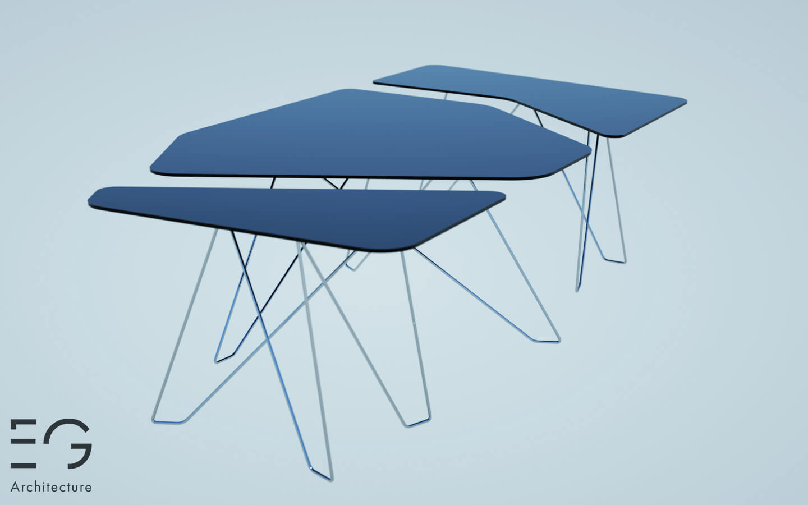
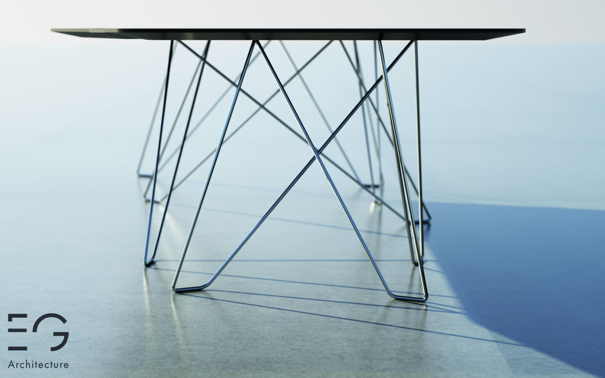
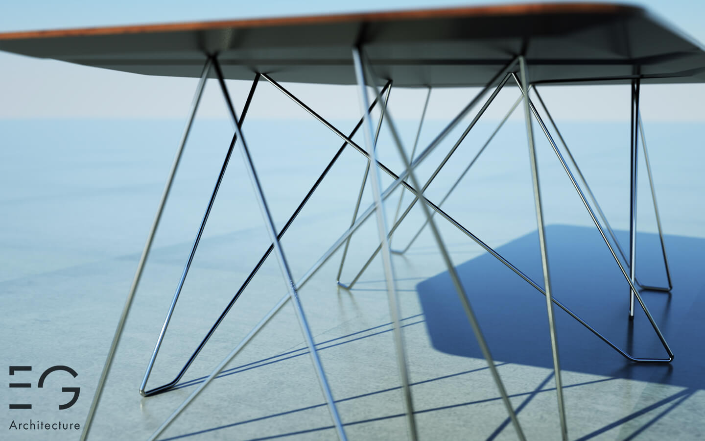

La configuration de cette table « plurifonctionnelle » peut être modifiée selon l’usage souhaité. Elle est constituée de trois éléments dissociables pouvant être rassemblés en une pièce unique au design soigné, permettant ainsi d’accueillir une dizaine de personnes. La souplesse et l’adaptabilité de ce concept répondent aux attentes actuelles d’optimisation de l’espace.
Outre cette recherche de modularité, l’objet présente une uniformité esthétique préservant une harmonie visuelle (couleur et matériaux). Chaque objet pris séparément a donc sa fonction propre et un design adapté à des besoins spécifiques et aux habitations intra-urbaines de plus en plus petites.
  Projet précédent Projet suivant